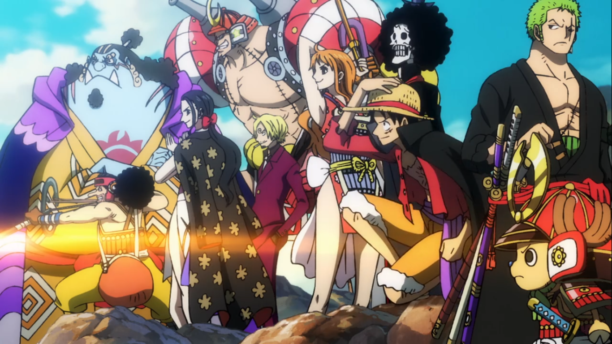

Busisiwe Mitchell
About me
I am currently a second year Computer science and Business Management student studying at the University of the Free State, In my spare time I love watching anime, reading novels and manga and listening to music. I was born in Bloemfontein and grew up in a town called Thaba Nchu in the Free State, I attended a Tlotlanang Combined School for all of my primary and high school years and matriculated there. I then went on to the University of the Witwatersrand intending to study a degree in civil engineering and during the course of my studies I was introduced to coding, that led to finding careers that involved programming and coding and that introduced me to Computer Science, I knew that was what I wanted to do, so I applied to study Computer Science at some Universities in 2022 and the UFS was the first one that got back to me. So I came to the UFS in the 2023 to study and I intend to get my degree.
Projects